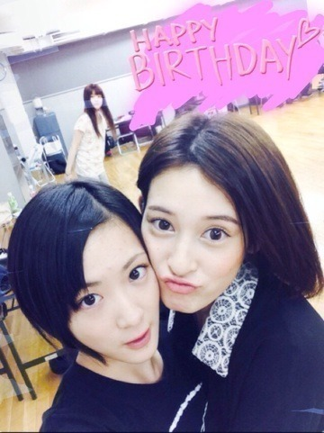

| 2013/11 02 Sat | 早稲田祭ヽ(・∀・)ノ |
今日はAGESTOCK2013 in早稲田祭におじゃまさせて頂きましたヽ(・∀・)ノ
大学生の皆さん乃木坂ファミリーの皆さんとイベントを一緒にさせて頂きました！
来てくださった皆さんありがとうございました

乃木坂初めてだよ〜って方は乃木坂に興味を持って頂いたら嬉しいです！
これからよろしくお願いします
生駒ちゃん秋田の高校を文化祭をやる前に転校したので文化祭をあまり知らないんです。
大学と高校は違うと思うのですが、友達と学校全体でひとつのイベントを作り上げるっていいな〜って！
乃木坂46としていろんなものを作らせて頂いているけど今日大学生のお兄さんお姉さん達見てたら凄くかっこよかった！
回りたかったな〜
タピオカ美味しかったです！
届けて下さってありがとうございました

あ〜タピオカ美味しかった

せっちゃん遅くなってごめんね

お誕生日おめでとうございます

意外とせっちゃんとめちゃくちゃ喋るんだよ〜ヽ(・∀・)ノ
凄く綺麗な人なのに親しみやすくて優しいひと！
今度遊びに連れてってねー！
せっちゃんと遊びに行ったら生駒ちゃん一気におしゃれになりそうよねっ！
前回のブログの質問答えて下さってありがとうございました☆
結果どっちの生駒ちゃんも良いと言ってくれてありがとう〜

綺麗な人になるから皆さんこれからも生駒ちゃんの事見ててねっ！
皆さんに質問！
東京に雪はいる？いらない？
生駒ちゃんは雪が大好きだから欲しいっ！
交通の便とか気になるけどでも雪が見たいのっ！
世の中はクリスマスに突入したが、
早いよっ！
生駒ちゃんまだハロウィン気分
 （笑）
（笑）
（笑）
へばなっ！☆
コメント(472)
2013/11/02 18:36